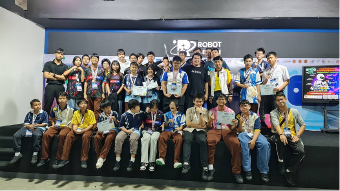

01
Portfolio Item
Title: การแข่งขัน WRG 2568
Type: competition
Date: 1 สิงหาคม 2568
Role: เป็นนักแข่งW3พร้อมกับปรับปรุงหุ่นควบคู่กันไป
Description:เป็นงานแข่งรายการหุ่นยนต์ต่างๆที่จัดขึ้นในเซียร์รังสิตโดยที่นักแข่งต้องเตรียมหุ่นและอะไหล่มาเองและสิ่งที่ได้ทำในงานคือแข่งกับผู้เล่นw3คนอื่นๆไปเรื่อยจนชนะได้ที่2มา
Skills:เขียนโปรแกรมหุ่นยนต์, และออกแบบหุ่นยนต์
Reflection
What I did: การเข้าร่วมการแข่งขันหุ่นยนต์ W3 ฟุตบอล
What I learned: ช่วยให้ได้รับประสบการณ์ที่มีคุณค่ามากมาย ทั้งในด้านการพัฒนาทักษะทางเทคนิค
Challenge: ปัญหาคือการที่หุ่นมีอาการขัดข้องหลังจากที่แข่งไปนานๆ ส่วนวิธีแก้คือระหว่างพักก่อนแข่งรอบถัดไปก็นำหุ่นมาปรับปรุงและเปลี่ยนอะไหล่
Next step: อยากปรับปรุงตัวหุ่นให้รับมือกับหุ่นของนักแข่งคนอื่นๆได้หลากหลายมากขึ้น
Evidence: ใส่ลิงก์หรือหลักฐานของผลงาน
